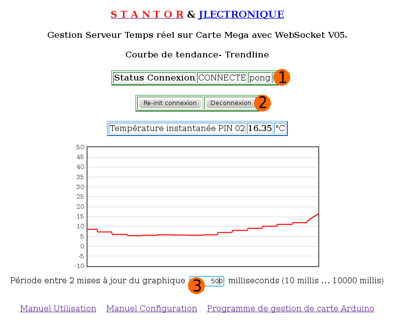

Manuel d'utilisation des programmes de contrôle de cartes Arduino Uno/Duemilanove 2560 par Websockets.
La page de gestion est décomposée en plusieurs tableaux permettant de (avec de haut en bas):
1)- Consulter l'état de la connexion avec le serveur sur la carte Arduino.
La signalisation "ping/pong" permet de s'assurer du fonctionnement de la liaison avec la carte.
2)- Commander la connexion et la déconnexion avec le serveur Arduino.
L'appui sur le bouton "initialisation
connexion" permet d'établir une liaison permanente avec la carte
Arduino au travers d'Internet/Intranet.
L'appui sur le bouton "déconnexion" interrompt la liaison.
3)- Consulter les informations digitales (entrées comme sorties).
4)- Commander des sorties digitales par click sur les boutons.
5)- Consulter les informations analogiques.
6)- Commander les sorties PWM par saisie sur zone de couleur cyan et bouton valider.
7)- Consulter les compteurs d'impulsion et commander la valeur initiale par saisie sur zone
de couleur cyan et bouton valider.
La page représentant la courbe de tendance est décomposée en plusieurs parties permettant de (avec de haut en bas):
1)- Consulter l'état de la connexion avec le serveur sur la carte Arduino.
La signalisation "ping/pong" permet de s'assurer du fonctionnement de la liaison avec la carte.
2)- Commander la connexion et la déconnexion avec le serveur Arduino.
L'appui sur le bouton "initialisation
connexion" permet d'établir une liaison permanente avec la carte
Arduino au travers d'Internet/Intranet.
L'appui sur le bouton "déconnexion" interrompt la liaison.
3)- Commander la période de rafraichissement de la courbe de tendance.

Manuel de configuration Programme de gestion de carte Arduino Courbe de tendance